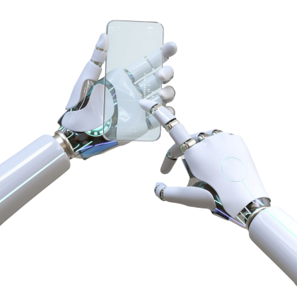

“Сделай сайт своими руками”
Искусственный интеллект - полезный инструмент или угроза?
“Я представляю себе время, когда мы будем для роботов тем, чем собаки являются для людей, и я болею за машины”.
— Клод Шеннон
“Я представляю себе время, когда мы будем для роботов тем, чем собаки являются для людей, и я болею за машины”.
— Клод Шеннон
Искусственный интеллект - это способность компьютерной системы имитировать когнитивные способности человека, такие как обучение и решение задач.
Используя математические функции и логику, компьютерная система имитирует процессы изучения новых сведений и принятия решений у людей.
Существующие на сегодня интеллектуальные системы имеют достаточно узкие области применения.
Точность в обработке данных
Способность анализировать большие массивы информации с большой скоростью
ИИ не нужен сон и перерыв на обед, он не допускает ошибок из-за переутомления
Использовать искусственный интеллект можно там, где человеку опасно находиться
Рост безработицы
Имеет высокую стоимость
Зависимость от машин

Единственный доступный сейчас тип ИИ, применяемый в голосовых помощниках, системах виртуальной реальности, рекомендательных механизмах и других решениях
ИИ с самосознанием и возможностями, приближенными к человеческим. По прогнозам экспертов, сильный ИИ будет окончательно сформирован и доступен для использования не раньше 2075 года
ИИ с полным самосознанием и сформированным мышлением, превосходящим человеческое. Cможет самостоятельно перепрограммироваться, создавать системы нового направления и алгоритмы без вмешательства человека
В информационных системах связи искусственный интеллект используется для распознавания голосовых запросов, поиска релевантных ответов и их озвучивания с помощью сгенерированного человеческого голоса
Оснащение логистической сферы устройствами с ИИ значительно снизит затраты времени на обработку гигантского объема данных. Система может объединить все внешние устройства и отслеживать погодные условия, плотность автомобильного потока, количество и местоположение ДТП
В этой сфере человек не может конкурировать с машиной, которая точно ведет счета, подсчитывает доход и налоги, что крайне полезно для государственной системы. ИИ постепенно повышает свою компетенцию
Умные помощники, которые не только дают советы врачам, но и выясняют генетическую предрасположенность к патологиям. IBM Watson уже определяет и разрабатывает план терапии 13 видов злокачественных новообразований
Более 60 искусственных интеллектов существует на данный момент. Что изобрело человечество?
Посмотреть